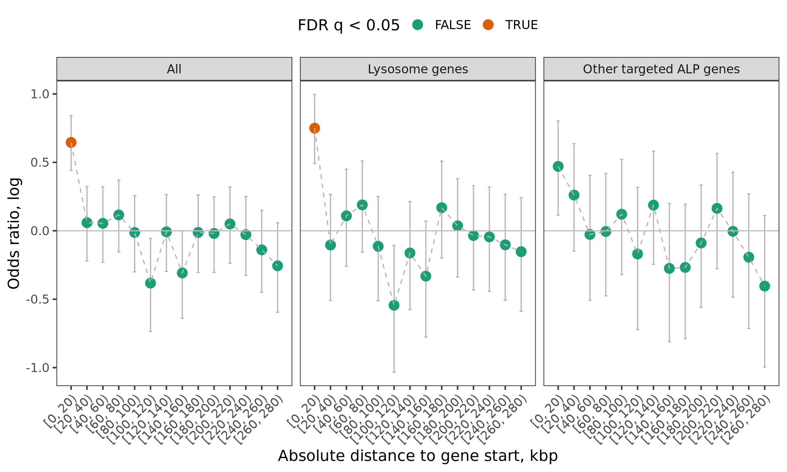
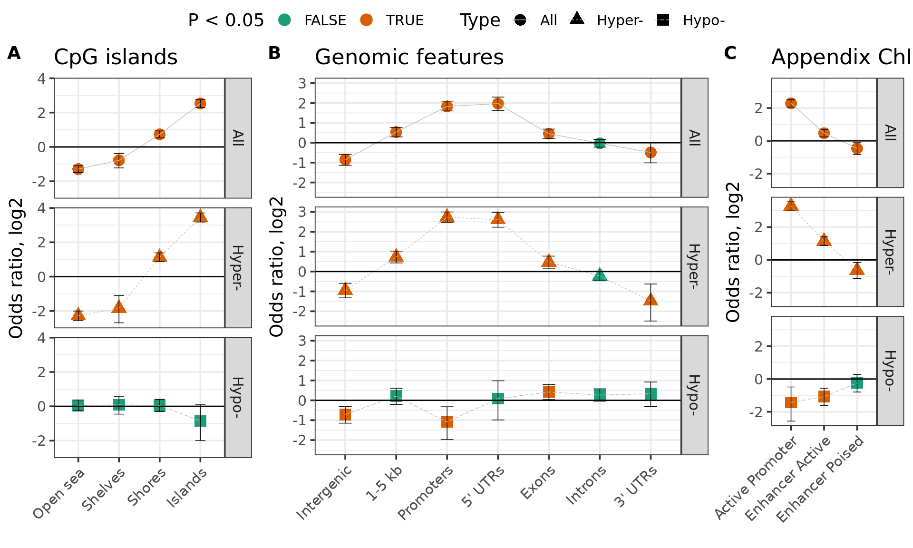
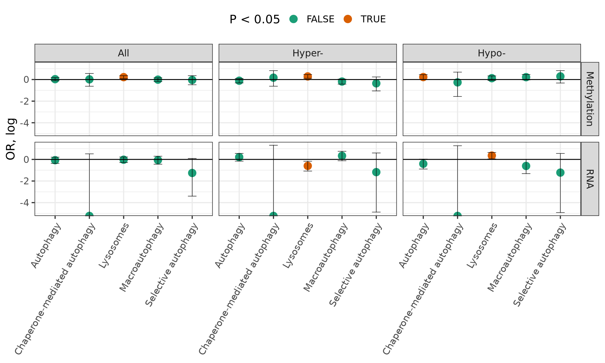

Results Appendix
Appendix PD vs Controls, Padlocks
## Number of loci 182024## Cases and controls:## Diagnosis
## Control PD/LBD
## 19 24## Number of significant loci 928## Number of genes affected 326Direction enrichment
##
## -1 1
## FALSE 87943 93124
## TRUE 376 552## # A tibble: 1 x 6
## estimate p.value conf.low conf.high method alternative
## <dbl> <dbl> <dbl> <dbl> <chr> <chr>
## 1 1.39 0.00000105 1.21 1.59 Fisher's Exact Test for Co… two.sided- Additional File 2 Robust linear regression fits on appendix PD/control DNA methylation data
Enrichment near lysosomal gene starts
For each CG site we measure distance from padlock target gene start site. We test the enrichment of DMCs among CGs that are within distance \(x\) from a target gene.
The target genes were stratified into ALP, PD GWAS implicated genes and Imprinted control genes
DMCs with FDR q < 0.05 were considered for ALP and GWAS genes but nominal p value < 0.05 was used to define DMC of imprinted genes
Fisher test was performed comparing the number of DMCs (yes/no) falling within certain distance of targeted gene (yes/no)

## estimate p.value conf.low conf.high
## 1: 2.1165879 3.665610e-08 1.6361292 2.7064676
## 2: 0.5803111 1.093513e-02 0.3558832 0.8974586
## 3: 1.6009940 7.760824e-03 1.1216186 2.2306684
## 4: 1.9065444 2.023606e-09 1.5537669 2.3214737
## 5: 0.6821717 2.051770e-02 0.4791228 0.9446170
## method alternative Bracket
## 1: Fisher's Exact Test for Count Data two.sided 0
## 2: Fisher's Exact Test for Count Data two.sided 5
## 3: Fisher's Exact Test for Count Data two.sided 0
## 4: Fisher's Exact Test for Count Data two.sided 0
## 5: Fisher's Exact Test for Count Data two.sided 5
## Target Q
## 1: Lysosome genes 5.498414e-07
## 2: Lysosome genes 8.201345e-02
## 3: Other targeted ALP genes 7.760824e-02
## 4: All 6.070819e-08
## 5: All 1.231062e-01Genomic enrichment
## Expected, % Obseverd, % OR Lo Hi P P < 0.05
## 1: 0.58119179 0.57650862 0.9808703 0.8592082 1.1205660 7.896205e-01
## 2: 0.64307811 0.42564655 0.4093252 0.3583334 0.4672773 1.773217e-41 ***
## 3: 0.09078821 0.05495690 0.5810935 0.4290376 0.7713622 5.817118e-05 ***
## 4: 0.22464353 0.32435345 1.6618031 1.4429236 1.9105317 2.970903e-12 ***
## 5: 0.04233633 0.20043103 5.7856458 4.8920968 6.8176576 3.198655e-70 ***
## 6: 0.02511607 0.09051724 3.9167461 3.0855907 4.9162060 1.956929e-23 ***
## 7: 0.15933405 0.20581897 1.3697844 1.1614894 1.6090920 1.840789e-04 ***
## 8: 0.05352894 0.03879310 0.7125332 0.4955073 0.9948064 4.789977e-02 *
## 9: 0.22692931 0.14008621 0.5535825 0.4561456 0.6673310 3.270535e-11 ***
## 10: 0.14586115 0.19827586 1.4513385 1.2276046 1.7086580 1.371840e-05 ***
## 11: 0.07596912 0.22413793 3.5521664 3.0264545 4.1549804 1.710097e-45 ***
## Category Type
## 1: hg19_genes_introns All
## 2: hg19_cpg_inter All
## 3: hg19_cpg_shelves All
## 4: hg19_cpg_shores All
## 5: hg19_cpg_islands All
## 6: hg19_genes_5UTRs All
## 7: hg19_genes_exons All
## 8: hg19_genes_3UTRs All
## 9: hg19_genes_intergenic All
## 10: hg19_genes_1to5kb All
## 11: hg19_genes_promoters All## Expected, % Obseverd, % OR Lo Hi P
## 1: 0.06178192 0.24030172 4.8799913 4.1740179 5.6887812 1.242559e-69
## 2: 0.06178192 0.38768116 9.7821017 8.1942692 11.6531103 7.446640e-111
## 3: 0.06178192 0.02393617 0.3719065 0.1686697 0.7140582 1.156806e-03
## 4: 0.10495343 0.07866379 0.7270894 0.5641960 0.9246258 8.402415e-03
## 5: 0.10495343 0.07065217 0.6476122 0.4549934 0.8979160 6.638033e-03
## 6: 0.10495343 0.09042553 0.8475247 0.5772500 1.2079775 3.997174e-01
## 7: 0.17272453 0.22413793 1.3862033 1.1816744 1.6204897 5.977400e-05
## 8: 0.17272453 0.31521739 2.2114258 1.8363643 2.6544362 2.730163e-16
## 9: 0.17272453 0.09042553 0.4755940 0.3239653 0.6777756 7.848752e-06
## P < 0.05 Category Type
## 1: *** Promoter All
## 2: *** Promoter Hyper-
## 3: ** Promoter Hypo-
## 4: ** PoisedEnhancer All
## 5: ** PoisedEnhancer Hyper-
## 6: PoisedEnhancer Hypo-
## 7: *** ActiveEnhancer All
## 8: *** ActiveEnhancer Hyper-
## 9: *** ActiveEnhancer Hypo-

Enrichment of genomic elements in apx pd vs controls
Enrichment of ALP pathways with DMCs
## estimate p.value conf.low conf.high
## 1: 0.9573666 0.9207028622 0.6156104 1.424297
## 2: 0.7026202 0.3007716576 0.3484172 1.268370
## 3: 1.3385645 0.2718588807 0.7239546 2.277442
## 4: 0.9890237 0.9331831932 0.8338224 1.167865
## 5: 0.8286218 0.1150447767 0.6534123 1.040933
## 6: 1.2437198 0.0869078585 0.9646624 1.589275
## 7: 1.2474292 0.0009557178 1.0919620 1.426230
## 8: 1.3332721 0.0009795409 1.1201590 1.589722
## 9: 1.1315301 0.2546174665 0.9180836 1.396792
## 10: 1.0164594 0.8875260281 0.5383671 1.750191
## 11: 1.1863592 0.5800249195 0.5389238 2.272600
## 12: 0.7688460 0.8237682844 0.2082274 1.987499
## 13: 1.0339789 0.6516878184 0.8895633 1.198707
## 14: 0.8964805 0.2839678986 0.7309250 1.093487
## 15: 1.2546253 0.0448162125 0.9976683 1.569468
## method alternative Term
## 1: Fisher's Exact Test for Count Data two.sided GO:0061912
## 2: Fisher's Exact Test for Count Data two.sided GO:0061912
## 3: Fisher's Exact Test for Count Data two.sided GO:0061912
## 4: Fisher's Exact Test for Count Data two.sided GO:0016236
## 5: Fisher's Exact Test for Count Data two.sided GO:0016236
## 6: Fisher's Exact Test for Count Data two.sided GO:0016236
## 7: Fisher's Exact Test for Count Data two.sided GO:0005764
## 8: Fisher's Exact Test for Count Data two.sided GO:0005764
## 9: Fisher's Exact Test for Count Data two.sided GO:0005764
## 10: Fisher's Exact Test for Count Data two.sided GO:0061684
## 11: Fisher's Exact Test for Count Data two.sided GO:0061684
## 12: Fisher's Exact Test for Count Data two.sided GO:0061684
## 13: Fisher's Exact Test for Count Data two.sided GO:0006914
## 14: Fisher's Exact Test for Count Data two.sided GO:0006914
## 15: Fisher's Exact Test for Count Data two.sided GO:0006914
## Name Type Dir
## 1: Selective autophagy Target All
## 2: Selective autophagy Target Hyper-
## 3: Selective autophagy Target Hypo-
## 4: Macroautophagy Target All
## 5: Macroautophagy Target Hyper-
## 6: Macroautophagy Target Hypo-
## 7: Lysosomes Target All
## 8: Lysosomes Target Hyper-
## 9: Lysosomes Target Hypo-
## 10: Chaperone-mediated autophagy Target All
## 11: Chaperone-mediated autophagy Target Hyper-
## 12: Chaperone-mediated autophagy Target Hypo-
## 13: Autophagy Target All
## 14: Autophagy Target Hyper-
## 15: Autophagy Target Hypo-

Enrichment of ALP pathways in apx pd vs controls
Appendix PD vs Controls, RNAseq
## Number of loci 14336## Cases and controls:## Diagnosis
## Control PD/LBD
## 16 12## Number of genes affected 246The ALP genes tend to be down-regulated
## # A tibble: 1 x 6
## estimate p.value conf.low conf.high method alternative
## <dbl> <dbl> <dbl> <dbl> <chr> <chr>
## 1 2.95 0.00231 1.42 5.51 Fisher's Exact Test for Count… two.sided- Additional File 3 Appendix PD vs Controls RNA-seq fits
Enrichment of ALP pathways with DEGs
## estimate p.value conf.low conf.high
## 1: 0.2848690 0.080679607 0.033372196 1.0965730
## 2: 0.3081378 0.368730846 0.007621483 1.8150409
## 3: 0.2951236 0.374055200 0.007300026 1.7382019
## 4: 0.9416623 0.790929641 0.641319232 1.3472913
## 5: 1.3929568 0.114900362 0.879114644 2.1197582
## 6: 0.5460653 0.054887335 0.268267354 0.9980949
## 7: 0.9727938 0.900573679 0.749552545 1.2483315
## 8: 0.5497994 0.004529585 0.339886314 0.8464226
## 9: 1.4234856 0.018528123 1.046359291 1.9038069
## 10: 0.0000000 0.150377146 0.000000000 1.6714127
## 11: 0.0000000 0.619674066 0.000000000 3.7045653
## 12: 0.0000000 0.620857640 0.000000000 3.5479623
## 13: 0.9315208 0.677397132 0.692787061 1.2338169
## 14: 1.2338310 0.217137881 0.850756088 1.7428100
## 15: 0.6656126 0.075169380 0.410627153 1.0272375
## method alternative Term
## 1: Fisher's Exact Test for Count Data two.sided GO:0061912
## 2: Fisher's Exact Test for Count Data two.sided GO:0061912
## 3: Fisher's Exact Test for Count Data two.sided GO:0061912
## 4: Fisher's Exact Test for Count Data two.sided GO:0016236
## 5: Fisher's Exact Test for Count Data two.sided GO:0016236
## 6: Fisher's Exact Test for Count Data two.sided GO:0016236
## 7: Fisher's Exact Test for Count Data two.sided GO:0005764
## 8: Fisher's Exact Test for Count Data two.sided GO:0005764
## 9: Fisher's Exact Test for Count Data two.sided GO:0005764
## 10: Fisher's Exact Test for Count Data two.sided GO:0061684
## 11: Fisher's Exact Test for Count Data two.sided GO:0061684
## 12: Fisher's Exact Test for Count Data two.sided GO:0061684
## 13: Fisher's Exact Test for Count Data two.sided GO:0006914
## 14: Fisher's Exact Test for Count Data two.sided GO:0006914
## 15: Fisher's Exact Test for Count Data two.sided GO:0006914
## Name Type Dir
## 1: Selective autophagy RNA All
## 2: Selective autophagy RNA Hyper-
## 3: Selective autophagy RNA Hypo-
## 4: Macroautophagy RNA All
## 5: Macroautophagy RNA Hyper-
## 6: Macroautophagy RNA Hypo-
## 7: Lysosomes RNA All
## 8: Lysosomes RNA Hyper-
## 9: Lysosomes RNA Hypo-
## 10: Chaperone-mediated autophagy RNA All
## 11: Chaperone-mediated autophagy RNA Hyper-
## 12: Chaperone-mediated autophagy RNA Hypo-
## 13: Autophagy RNA All
## 14: Autophagy RNA Hyper-
## 15: Autophagy RNA Hypo-Correlation of fold changes
## correlation std.err t.value p.value
## Y 0.2084524 0.0477231 4.367956 1.581823e-05